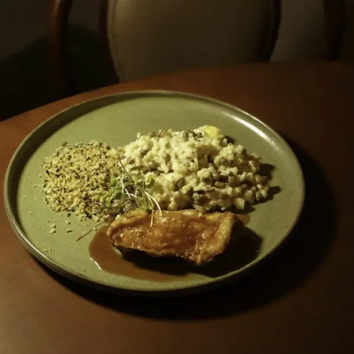
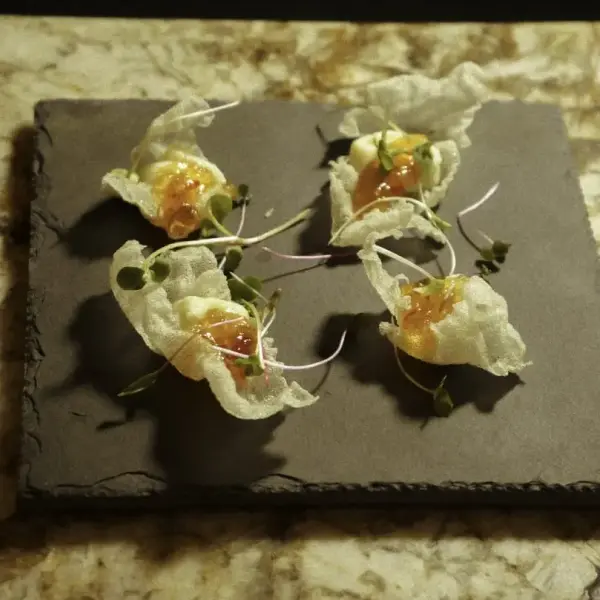
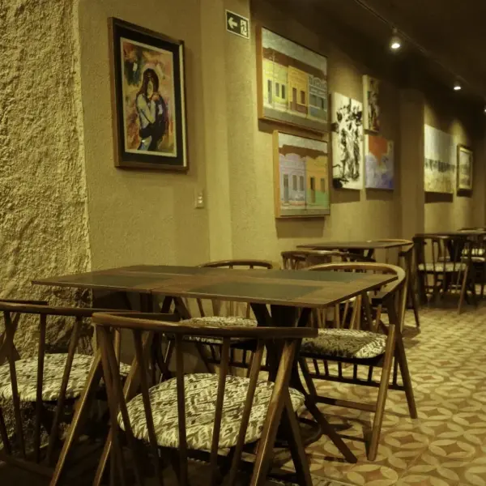
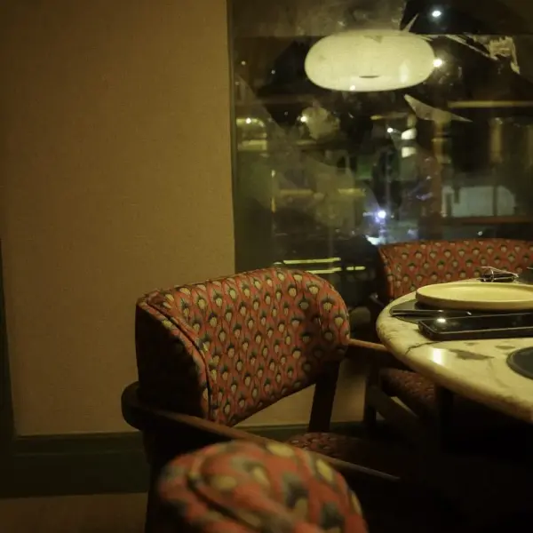
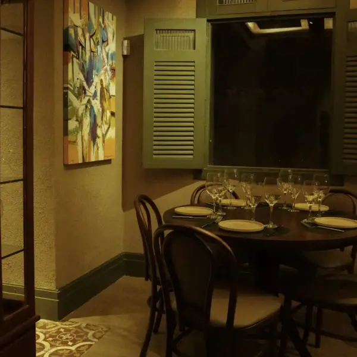
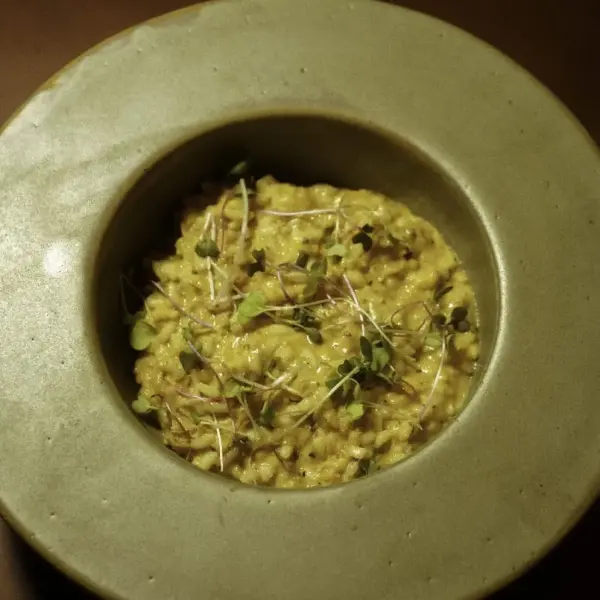
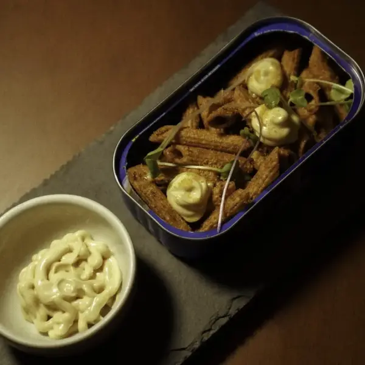

Pétala de Cabra
Entrada crocante com boursin de cabra e geleia de pimenta.
Fio Restaurante, no Meireles
Ingredientes brasileiros, encontros e uma cozinha de olhar contemporâneo. Esperamos você para descobrir os sabores da nossa casa em Fortaleza.
Uma mesa, boa companhia e tempo para saborear.

O que nos reúne
Da carne de sol e do queijo coalho aos pescados, camarões e sabores de coco: nossa cozinha reúne referências brasileiras em diferentes combinações.
Você encontra essas referências nas entradas, nos pratos principais e nas sobremesas. Venha conhecer nosso espaço e escolher o que combina com o seu encontro.
Acompanhar as novidades do FioDa nossa cozinha
Conheça uma seleção de criações da casa, das primeiras porções ao último doce. Consulte com a nossa equipe o cardápio atual e a disponibilidade de cada receita.

Primeiro, os olhos
Nosso convite é experimentar. Conheça um pouco das apresentações que saem da cozinha e deixe espaço para descobrir novas combinações à mesa.

Entre, a casa é sua
Mesas de madeira, luz acolhedora e os detalhes do nosso salão acompanham a experiência. Veja o ambiente antes de escolher a sua mesa.



Nosso salão tem ar-condicionado para acompanhar sua visita.
Se precisar de orientação para a chegada ou para acomodar sua mesa, converse com a equipe.
Conte com o acesso disponível no restaurante e consulte a equipe durante a visita.
Também dá vontade de provar
Mais registros das nossas apresentações. Para sugestões e informações sobre ingredientes, fale com a equipe na sua visita.


O próximo encontro
Consulte as mesas disponíveis pelo Primeira Mesa. A plataforma apresenta os dias, horários e condições de cada reserva antes da confirmação.
Consultar mesas no Primeira MesaPrefiro falar com o restauranteInforme o dia, o horário e o número de pessoas na plataforma de reservas.
Verifique a disponibilidade e as regras apresentadas para a opção escolhida.
Guarde sua confirmação e, se tiver alguma necessidade para a visita, fale com a gente antes de chegar.
Esperamos você
Estamos no Meireles, em Fortaleza. Abra a localização da casa no mapa ou ligue para a nossa equipe para confirmar o melhor caminho e os horários do dia.
MeirelesAntes do encontro
Acesse nosso perfil no Primeira Mesa para conferir a disponibilidade e as condições. Se preferir tirar uma dúvida primeiro, ligue para o restaurante.
As opções e a disponibilidade das receitas podem mudar. Consulte com a equipe o cardápio e os valores atuais antes da visita.
Converse diretamente com a nossa equipe antes de escolher, especialmente se tiver alergias ou restrições alimentares. Não presuma uma adaptação sem confirmar com o restaurante.
Contamos com acesso para cadeirantes, conforme a estrutura da casa. Fale com a equipe se precisar de orientação para sua chegada ou acomodação.
Consulte nossos canais ou ligue para o restaurante. Os horários oferecidos para reservas podem variar de acordo com o dia.